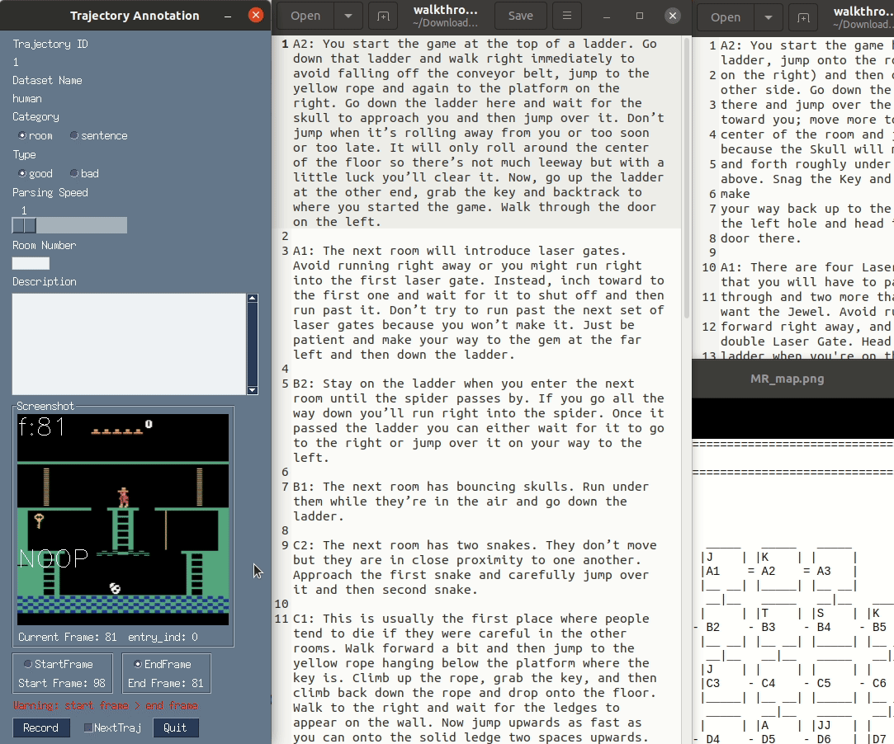
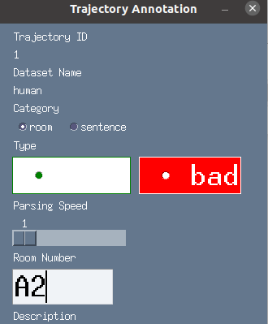

--- DON'T MODIFY THIS LINE ---
[TOC]
TODO List#
Walkthrough alignment#
I made a annotation tool for efficiency


We collect the following data attributes
# table design
# category : {room, sentence}
# | trajectory id | start frame | end frame | category | description | replay type | room number | dataset name |
trajectory_id_dict = dict() # <num>
start_frame_dict = dict() # <num>
end_frame_dict = dict() # <num>
category_dict = dict() # {room, sentence} room means we segment the trajectory based on the room the agent stays,
description_dict = dict() # <text>
replay_type_dict = dict() # good trajectory or bad
room_number_dict = dict() # A1 / B1 etc.
dataset_name_dict = dict () # "human" / "dqn"
Sample data entry
| trajectory_id |
start_frame |
end_frame |
category |
description |
replay_type |
room_number |
dataset_name |
| 1 |
98 |
480 |
room |
You start the game at the top of a ladder. Go … |
good |
A2 |
human |
Potential Montezuma’s Revenge project direction#
First of all, given that most RL agents get low scores when playing Montezuma’s Revenge game, we test if our methods helps to
- achieve higher score,
- or decrease the training episodes required to achieve the same score.
After that, we want to test that compared to providing observations replay only, the text walkthrough is able to increase the generalisation ability of the agent
-
this is important because behaviour cloning agents that utilise expert’s replay trajectories can already play Montezuma’s Revenge game. (check this blog)
-
so we want to prove that compared to previous behaviour cloning agents, our agents may have better generalisation performance
- how to test that
- use walkthrough to play unseen game levels (zero-shot learning performance)
- test the performance gap when using not-so-good replay data w/ and w/o natural language descriptions
Later, we may want to refine our methods so as to address the alignment issue between walkthrough and executions.
and maybe we leave other potential research questions to new project with other environments
- e.g., during paper reading meeting, we discussed about “handling ambiguity in machine translation” research question, which is about translating high level strategy to middle level walkthrough to concrete actions (i.e. machine code)